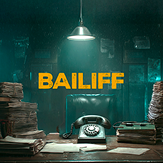 | 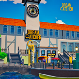 |
베일리프(Bailiff)VR 김지현 반가혜 송시연 | DREAMCATCHERVR 김나현 임지은 정유빈 |
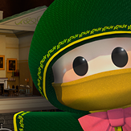 | |
Louis : 멈춰버린 저택MR 김어진 박수현 오혜진 |
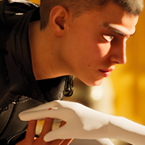 | 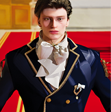 |
결말을 바꾸는 공주가 되었습니다MOVIE 고수현 | 빙의했는데 내용을 몰라요VR 고수현 |
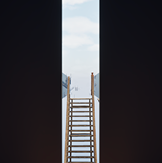 | |
ExorClue(엑소클루)AR 김소희 | INTERSPACEVR 반가혜 |
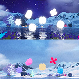 | 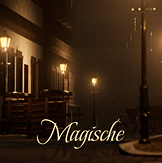 |
LOVE, CARRIEDMEDIA ART 송시연 | MagischeVR 정유빈 |
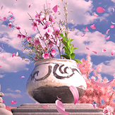 | 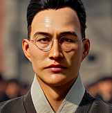 |
사계MEDIA ART 박수현 반가혜 오혜진 | 함께 만든 광복MEDIA ART 김나현 김소희 김어진 김지현 |
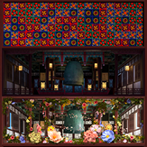 | |
Radiance : 찬란MEDIA ART 송시연 임지은 |